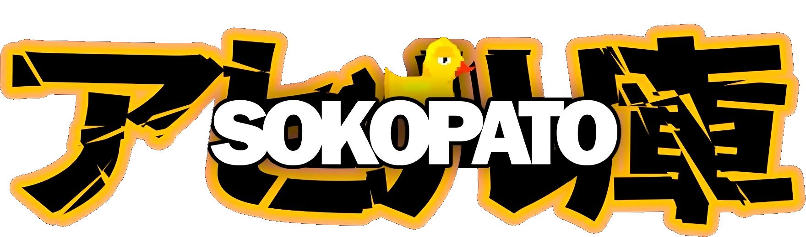
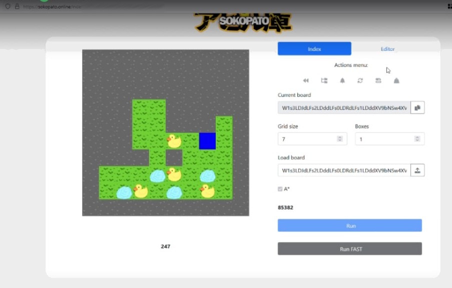
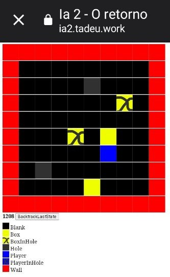

O desafio deste projeto era desenvolver um Agente Inteligente capaz de encontrar autonomamente a sequência ótima de movimentos para resolver o jogo Sokoban, um problema clássico de complexidade PSPACE-completo.
Lógica e Motor A*
Para resolver tabuleiros complexos onde a força bruta é inútil, implementamos o algoritmo de busca A* (A-Star). Utilizando a Distância de Manhattan como heurística, a IA é guiada pelas rotas mais prováveis, aliada a um forte sistema de deadlock detection que descarta caminhos impossíveis.
Engenharia do Algoritmo A*: Yuri Tadeu Covo Zwaig
Apoio Técnico & Documentação: Hugo Gomes e Letícia Wong

Depuração e Renderização
Antes de chegarmos à interface web polida, o motor foi intensivamente testado num ambiente isolado. Construímos uma camada de renderização crua focada unicamente na performance da matriz matemática. Cada movimento gera um novo estado que é validado em milissegundos.
